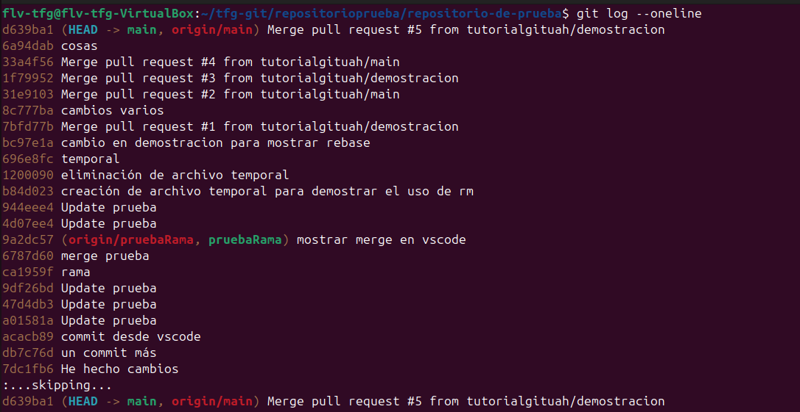
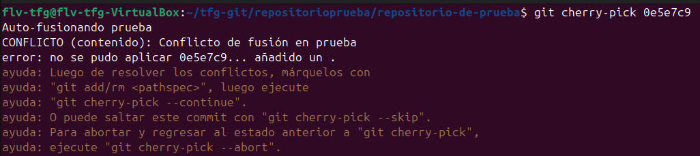
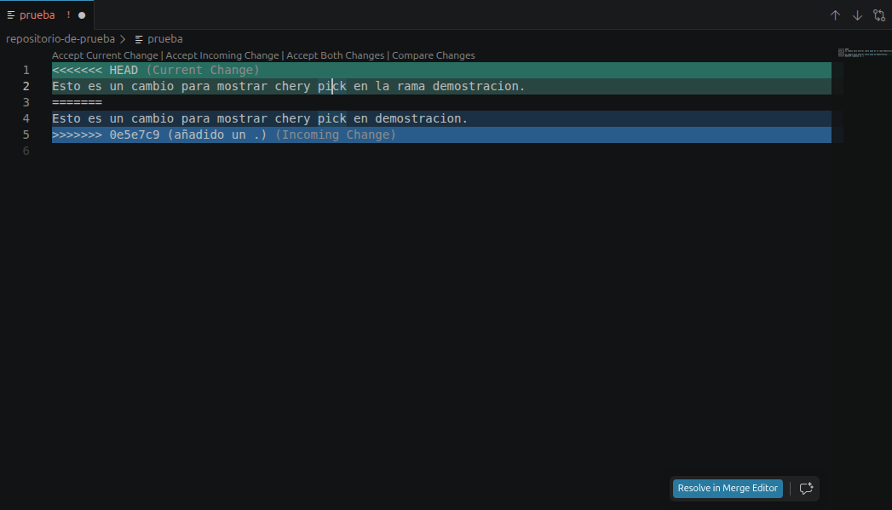

git cherry-pickEl comando git cherry-pick se utiliza para aplicar cambios específicos (commits) de una rama a otra. Es útil cuando quieres seleccionar commits específicos sin integrar toda la rama, permitiendo "copiar" cambios individuales entre ramas.

Ver el hash del commit
Para obtener el hash del commit que deseas aplicar:
git log --oneline
Esto te mostrará una lista compacta de commits con sus hashes:
abc1234 Agregar nueva característica
def5678 Corregir error en login
Para salir, presiona la tecla 'q'.

Aplicar un commit específico
Para aplicar un commit de otra rama a la rama actual:
git cherry-pick
Por ejemplo:
git cherry-pick abc1234
Esto copia el commit especificado y lo aplica a tu rama actual.

Avisos que saldrán
Como pudimos ver en la captura anterior, cherry-pick nos dice que hay un conflicto, estamos aplicando cambios de un commit anterior al estado actual del proyecto.
En vscode, este conflicto se mostrará automáticamente, permitiéndote resolverlo manualmente. Hemos de hacer click en el botón que tenemos disponible como se ve en la captura.
Deberemos hacer commit en vscode o la terminal después de resolver los conflictos.
Resolver
Con el commit hecho ya podemos completar el cherry-pick después de resolver los conflictos:
git cherry-pick abc1234
Continuar si hay conflictos
Si durante el cherry-pick hay conflictos, Git pausará el proceso:
git cherry-pick --continue
Usa esto después de resolver los conflictos manualmente en los archivos.
Cancelar el cherry-pick
Si algo sale mal y quieres abortar la operación:
git cherry-pick --abort
Esto deshace el cherry-pick y vuelve a tu estado anterior.
Aplicar sin realizar commit automático
Para aplicar los cambios pero sin crear el commit automáticamente:
git cherry-pick -n
O la versión larga:
git cherry-pick --no-commit
Esto te permite revisar o modificar los cambios antes de hacer commit.
Visual Studio Code no tiene interfaz gráfica nativa para cherry-pick. Deberás usar la terminal integrada para ejecutar los comandos.